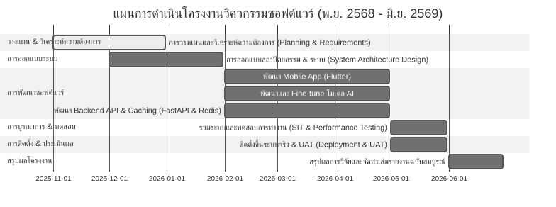

Software Requirements Specification (SRS)
หลักสูตรวิศวกรรมซอฟต์แวร์ สาขาวิศวกรรมไฟฟ้า คณะวิศวกรรมศาสตร์ มหาวิทยาลัยเทคโนโลยีราชมงคลล้านนา ปีการศึกษา 2/2568 รหัสโครงงานวิศวกรรม: SE02
เอกสารข้อกำหนดความต้องการทางซอฟต์แวร์ (Software Requirements Specification - SRS)
โครงงาน: แอปตรวจสอบรูปภาพตัดต่อที่ถูกนำมาหลอกลวง (Image Forgery Detection Application for Fraud Prevention)
หลักสูตรวิศวกรรมซอฟต์แวร์ สาขาวิศวกรรมไฟฟ้า คณะวิศวกรรมศาสตร์
มหาวิทยาลัยเทคโนโลยีราชมงคลล้านนา ปีการศึกษา 2/2568
รหัสโครงงานวิศวกรรม: SE02
คณะผู้ดำเนินงาน
-
นาย ภานุวัฒน์ ต๋าคำ (หัวหน้าโครงงาน)
รหัสนักศึกษา: 67543210044-3 ชั้นปี: วิศวกรรมซอฟต์แวร์ ปี 2ข (หลักสูตรเทียบโอน)
ความเชี่ยวชาญ: การพัฒนาโมบายแอปพลิเคชัน, การพัฒนาเว็บแอปพลิเคชัน, การวิเคราะห์และออกแบบระบบ, การออกแบบฐานข้อมูล, การออกแบบส่วนติดต่อผู้ใช้ (UI), การเขียนโปรแกรมภาษา Python และ JavaScript
ความรับผิดชอบ: วางแผนและกำหนดขอบเขตโครงงาน, เก็บและวิเคราะห์ความต้องการระบบ, วิเคราะห์และออกแบบระบบ, พัฒนาแอปพลิเคชันบนอุปกรณ์เคลื่อนที่, พัฒนาระบบฝั่งเซิร์ฟเวอร์, พัฒนาและฝึกสอนโมเดลปัญญาประดิษฐ์ (AI), จัดทำเอกสารประกอบโครงงาน
สัดส่วนความรับผิดชอบ: 70%
สถานที่ติดต่อ: มหาวิทยาลัยเทคโนโลยีราชมงคลล้านนา เชียงใหม่ ดอยสะเก็ด
โทรศัพท์: 083-923-0703
อีเมล: panuwat_ta67@live.rmutl.ac.th -
นาย เอกพันธ์ ทศทิศรังสรรค์ (ผู้ร่วมโครงงาน)
รหัสนักศึกษา: 67543210050-0 ชั้นปี: วิศวกรรมซอฟต์แวร์ ปี 2ข (หลักสูตรเทียบโอน)
ความเชี่ยวชาญ: การพัฒนาโมบายแอปพลิเคชัน, การพัฒนาเว็บแอปพลิเคชัน, การวิเคราะห์และออกแบบระบบ
ความรับผิดชอบ: การวิเคราะห์และออกแบบระบบ, พัฒนาแอปพลิเคชันบนอุปกรณ์เคลื่อนที่, จัดทำเอกสารประกอบโครงงาน, ดำเนินการทดสอบระบบ
สัดส่วนความรับผิดชอบ: 30%
สถานที่ติดต่อ: มหาวิทยาลัยเทคโนโลยีราชมงคลล้านนา เชียงใหม่ ดอยสะเก็ด
โทรศัพท์: 093-149-1440
อีเมล: akkapan_to67@live.rmutl.ac.th
อาจารย์ที่ปรึกษาร่วม: อาจารย์ สัญญา อุทธโยธา และ อาจารย์ ปิยผล ยืนยงสถาวร วันที่เสนอโครงงาน: 20 มีนาคม พ.ศ. 2568
1. บทนำ (Introduction)
1.1 วัตถุประสงค์ของเอกสาร (Purpose)
เอกสารฉบับนี้จัดทำขึ้นเพื่อระบุข้อกำหนดความต้องการทางซอฟต์แวร์ (Software Requirements Specification: SRS) สำหรับแอปพลิเคชันตรวจสอบรูปภาพตัดต่อเพื่อป้องกันการหลอกลวง โดยแสดงข้อมูลเกี่ยวกับความต้องการทางธุรกิจ (Business Requirements) ความต้องการเชิงฟังก์ชัน (Functional Requirements) ความต้องการที่ไม่ใช่ฟังก์ชัน (Non-Functional Requirements) สถาปัตยกรรมของระบบ และการออกแบบระบบเบื้องต้นเพื่อใช้เป็นแนวทางและข้อตกลงร่วมในการพัฒนาโครงงานวิศวกรรมซอฟต์แวร์นี้
1.2 ขอบเขตของผลิตภัณฑ์ (Product Scope)
ระบบ Scam Image Detection เป็นระบบตรวจสอบความเสี่ยงของรูปภาพที่สงสัยว่าถูกตัดต่อหรือสร้างขึ้นด้วยปัญญาประดิษฐ์เพื่อลดการตกเป็นเหยื่อของการหลอกลวงทางไซเบอร์ เช่น สลิปโอนเงินปลอม หรือภาพหน้าคนปลอม โดยระบบจะตรวจสอบผ่าน 3 เลเยอร์หลัก (Multi-layer Analysis):
- Textual Analysis (วิเคราะห์ข้อความในภาพ): ดึงข้อความด้วย OCR และวิเคราะห์หาคำสำคัญหรือรูปแบบประโยคหลอกลวงด้วย NLP
- Source Verification (ตรวจสอบแหล่งที่มา): ค้นหาภาพย้อนกลับ (Reverse Image Search) เพื่อตรวจสอบว่าภาพเคยปรากฏในอินเทอร์เน็ตมาก่อนหรือไม่
- Visual Anomaly Detection (วิเคราะห์ความผิดปกติทางทัศนภาพ): ใช้โมเดลการเรียนรู้เชิงลึก (Deep Learning) เพื่อหาร่องรอยการตัดต่อ (Image Forgery) หรือภาพที่ถูกสร้างโดย Generative AI (AI-Generated Image)
ขอบเขตแพลตฟอร์ม v1: รองรับ Android เท่านั้น (พัฒนา codebase เดียวด้วย Flutter เตรียม build iOS ในอนาคต)
1.3 คำสำคัญ (Keywords)
- Image Forgery Detection: การตรวจสอบการปลอมแปลงรูปภาพ
- Explainable AI (XAI): ปัญญาประดิษฐ์ที่อธิบายได้
- Heatmap (Heatmap): แผนที่ความร้อนระบุจุดผิดปกติ
- Multi-layer Analysis: การวิเคราะห์ข้อมูลแบบหลายชั้น
- Microservices Architecture: สถาปัตยกรรมไมโครเซอร์วิส
- PDPA (Personal Data Protection Act): พระราชบัญญัติคุ้มครองข้อมูลส่วนบุคคล
2. คำอธิบายโดยรวม (Overall Description)
2.1 มุมมองของผลิตภัณฑ์ (Product Perspective)
ระบบตรวจสอบภาพหลอกลวงได้รับการพัฒนาให้อยู่ในรูปของแอปพลิเคชันบนสมาร์ทโฟน (Flutter) เพื่อให้เข้าถึงง่าย ทำงานร่วมกับ API Gateway ฝั่งระบบหลังบ้าน (FastAPI) และระบบบริการตรวจสอบวิเคราะห์ปัญญาประดิษฐ์ (AI Inference Service) เพื่อส่งผลลัพธ์ที่เป็นระดับความเสี่ยง (Risk Score) และคำอธิบายเชิงภาพ (Heatmap) กลับไปยังผู้ใช้
2.1.1 แผนภาพ Context Diagram (C1)
แสดงขอบเขตและการแลกเปลี่ยนข้อมูลระหว่างผู้ใช้ ระบบ และบริการภายนอก:

ดู Mermaid source
flowchart TD
%% การตั้งค่า Class สีต่างๆ (กำหนด color:black ตามคำสั่ง)
classDef mainSystem fill:#0050ef,stroke:#001DBC,color:black
classDef userFill fill:#fff2cc,stroke:#d6b656,color:black
classDef adminFill fill:#dae8fc,stroke:#6c8ebf,color:black
classDef extFill fill:#f5f5f5,stroke:#666666,color:black
%% Title Area
subgraph Context [C1: System Context Diagram]
direction TB
%% Nodes (โหนดต่างๆ)
User("General User<br>[Person]")
System("Mobile App: Scam Image Detection<br>[Software System]<br>Allows users to upload images to detect forgery,<br>AI generation, and existing scams.")
Admin("Admin<br>[Person]")
ExtSearch("Reverse Image Search Provider<br>[External System]<br>Google Vision API / Bing Visual Search<br>(Used to find similar images on the web)")
ExtNotify("Push Notification Service<br>[External System]<br>Firebase Cloud Messaging (FCM, Phase 2)<br>(v1: in-app/polling)")
%% Relationships (เส้นเชื่อมโยง)
User -- "1. อัปโหลดรูปเพื่อตรวจสอบ<br>2. ดูรายงานความเสี่ยง" --> System
System -- "ส่ง URL รูปภาพ / ข้อมูลไบนารี" --> ExtSearch
ExtSearch -.->|"ส่งคืน URL รูปภาพที่คล้ายกัน"| System
System -- "ส่งข้อมูลการแจ้งเตือน (Payload)" --> ExtNotify
Admin -- "ตรวจสอบรูปที่ถูกรายงาน /<br>อัปเดตข้อมูลโมเดล" --> System
end
%% Apply Styles (การระบายสี)
class System mainSystem
class User userFill
class Admin adminFill
class ExtSearch,ExtNotify extFill
คำอธิบายระบบในภาพรวม (System Context Details)
- 1. ระบบหลัก (The Software System):
- Mobile App: Scam Image Detection: เป็นแอปพลิเคชันบนมือถือที่พัฒนาด้วย Flutter สำหรับอำนวยความสะดวกให้ผู้ใช้งานทั่วไปสามารถอัปโหลดรูปภาพที่น่าสงสัยเข้ามาตรวจสอบความเสี่ยงของการปลอมแปลงและการหลอกลวง
- 2. ผู้ใช้งาน (People):
- General User (ผู้ใช้งานทั่วไป): ผู้รับรูปภาพน่าสงสัย เช่น สลิปโอนเงินปลอม หรือรูปโปรไฟล์หลอกลวง ส่งภาพเข้ามาตรวจสอบและดูรายงานระดับความเสี่ยงเพื่อประกอบการตัดสินใจ
- Admin (ผู้ดูแลระบบ): ตรวจสอบรูปภาพสแกมที่ผู้ใช้รายงาน ส่งภาพเข้าคลังชุดข้อมูล หรือดำเนินงานอัปเดตข้อมูลไฟล์โมเดลปัญญาประดิษฐ์ให้เท่าทันรูปแบบกลโกงใหม่ๆ
- 3. ระบบภายนอก (External Systems):
- Reverse Image Search Provider: ระบบภายนอก (Google Vision API / Bing Visual Search) สำหรับสืบค้นและค้นหาว่าไฟล์ภาพดังกล่าวเคยปรากฏในอินเทอร์เน็ตที่ใดบ้าง เพื่อระบุแหล่งที่มาและบริบทที่แท้จริง
- Push Notification Service (Phase 2 = FCM): ใน v1 ใช้การแจ้งเตือนแบบ in-app/polling ภายใน 60 วินาทีเมื่อระบบวิเคราะห์ผลลัพธ์เบื้องหลังเสร็จสมบูรณ์
- สรุปขั้นตอนการทำงาน (Workflow Scenario):
- User อัปโหลดรูปภาพที่ต้องการตรวจสอบเข้ามาในระบบผ่านแอปพลิเคชันมือถือ
- System ตรวจสอบความละเอียด ร่องรอยการตัดต่อ (Semantic Segmentation) และส่งข้อมูลสกัดภาพไปสืบค้นแหล่งที่มาผ่าน Google/Bing API
- ระบบประมวลผลคำนวณความเสี่ยง และแจ้งเตือนผู้ใช้งานแบบ in-app/polling ภายใน 60 วินาที (FCM push = Phase 2)
- ผู้ใช้เปิดตรวจสอบรายงานผลลัพธ์ดัชนีความเสี่ยงพร้อมแผนที่ความร้อน (Heatmap)
- หากภาพเป็นรูปแบบกลโกงใหม่ ผู้ใช้สามารถกดรายงานเพื่อส่งข้อมูลไปให้ Admin ทำการอัปเดตโมเดลในอนาคต
2.1.2 แผนภาพ Container Diagram (C2)
แสดงโครงสร้างส่วนประกอบย่อยภายในระบบที่ทำงานร่วมกันแบบ Microservices:

ดู Mermaid source
flowchart TB
%% การตั้งค่า Class สีต่างๆ
classDef userFill fill:#fff2cc,stroke:#d6b656,color:black
classDef clientFill fill:#dae8fc,stroke:#6c8ebf,color:black
classDef backendFill fill:#d5e8d4,stroke:#82b366,color:black
classDef storageFill fill:#ffe6cc,stroke:#d79b00,color:black
classDef extFill fill:#f5f5f5,stroke:#666666,color:black
%% Actors Boundary
User("General User<br>[Person]<br>ผู้ใช้งานทั่วไป")
Admin("Admin<br>[Person]<br>ผู้ดูแลระบบ")
%% System Boundary
subgraph ScamSystem [Scam Image Detection - System Boundary]
direction TB
subgraph Frontends [Frontend Layer]
MobileApp("Mobile App<br>[Container: Flutter]<br>อัปโหลดและเลือกรูปภาพ,<br>แสดงผลคะแนนความเสี่ยง (Risk Score)")
AdminPortal("Admin Web Portal<br>[Container: React + Admin UI]<br>จัดการผู้ใช้ (ดู+เปิด/ปิดบัญชี), ตรวจสอบสแกมที่รายงาน,<br>จัดการชุดข้อมูล, อัปเดตโมเดล")
end
subgraph Backends [Backend & API Layer]
APIGateway("API Application<br>[Container: Python FastAPI]<br>จัดการ Logic หลัก, ดึง Metadata,<br>ตรวจสอบ OCR")
AIInference("AI Inference Service<br>[Container: PyTorch / ONNX]<br>ตรวจการตัดต่อ (Semantic Segmentation),<br>เช็คว่าเป็นภาพ AI")
end
subgraph Storages [Storage & Cache Layer]
Cache("Cache<br>[Container: Redis]<br>เก็บผลตรวจชั่วคราว (Cache Hit)<br>เพื่อลดเวลาประมวลผลซ้ำ")
ObjectStore("Object Storage<br>[Container: Cloud Storage]<br>เก็บไฟล์รูปภาพต้นฉบับ,<br>ภาพ Heatmap")
MainDB[("Main Database<br>[Container: PostgreSQL]<br>เก็บข้อมูลผู้ใช้, ประวัติการสแกน,<br>ผลลัพธ์ (Risk Score)")]
end
end
%% External Systems Boundary
subgraph Externals [External Services]
PushService("Push Notification Service<br>[External System: FCM, Phase 2]<br>v1 = in-app/polling")
ReverseSearch("Reverse Image Search<br>[External System: Google Vision API]<br>ระบบค้นหาแหล่งที่มาของรูปภาพ")
end
%% Relationships / Associations
User -- "Uploads image & views result" --> MobileApp
Admin -- "Manages system" --> AdminPortal
MobileApp -- "API Calls<br>[HTTPS / JSON]" --> APIGateway
AdminPortal -- "API Calls<br>[HTTPS / JSON]" --> APIGateway
APIGateway -- "เช็คประวัติการสแกน" --> Cache
APIGateway -- "ส่งตรวจร่องรอย / AI" --> AIInference
APIGateway -- "จัดเก็บ / ดึงรูปภาพ" --> ObjectStore
APIGateway -- "บันทึกผลลัพธ์ขั้นสุดท้าย" --> MainDB
APIGateway -- "แจ้งเตือนเมื่อ Timeout / ประมวลผลเสร็จ<br>(v1: in-app/polling; FCM = Phase 2)[HTTPS]" --> PushService
APIGateway -- "ค้นหาแหล่งที่มา<br>[HTTPS]" --> ReverseSearch
%% Apply Styles
class User,Admin userFill
class MobileApp,AdminPortal clientFill
class APIGateway,AIInference backendFill
class Cache,ObjectStore,MainDB storageFill
class PushService,ReverseSearch extFill
คำอธิบาย Container Diagram
สถาปัตยกรรมของระบบ Scam Image Detection ถูกออกแบบภายใต้แนวคิด Microservices และ Cloud-Native Architecture เพื่อให้ระบบสามารถรองรับการประมวลผลข้อมูลรูปภาพและโมเดลปัญญาประดิษฐ์ (ซึ่งใช้ทรัพยากรการคำนวณสูง) ได้อย่างมีประสิทธิภาพ โดยไม่ส่งผลกระทบต่อความเร็วในการตอบสนองของแอปพลิเคชัน ภายในขอบเขตของระบบ (System Boundary) ประกอบด้วยคอนเทนเนอร์หลัก 3 ส่วน ดังนี้:
- 1. ส่วนติดต่อผู้ใช้งาน (Frontend Containers):
- Mobile App (Flutter; v1: Android เท่านั้น — CON-MOB-01): แอปพลิเคชันบนสมาร์ทโฟนสำหรับผู้ใช้งานทั่วไป (General User) ทำหน้าที่รับส่งไฟล์ภาพและแสดงผลคะแนนความเสี่ยง (Risk Score) พร้อมแผนที่ความร้อน (Heatmap)
- Admin Web Portal (React + Admin UI): เว็บแอปสำหรับแอดมินใช้ตรวจสอบสถิติระบบ บริหารจัดการบัญชีผู้ใช้งาน (ดู + เปิด/ปิดบัญชี) ตรวจสอบรูปภาพสแกมที่รายงาน และอัปเดตโมเดล AI
- 2. ส่วนประมวลผลหลัก (Backend Containers):
- API Application (FastAPI): ทำหน้าที่เป็น API Gateway รับส่งข้อมูล และประมวลผลตรรกะทางธุรกิจ เช่น การยืนยันตัวตน ดึงข้อมูลแฝง (Metadata) และตรวจสอบ OCR เบื้องต้น
- AI Inference Service (PyTorch / ONNX): เซอร์วิสวิเคราะห์โมเดล AI โดยเฉพาะ ทำการตรวจสอบรูปภาพว่าถูกตัดต่อ (Semantic Segmentation) หรือสร้างจากปัญญาประดิษฐ์ (AI-Generated Image) หรือไม่
- 3. ส่วนจัดเก็บข้อมูล (Storage Containers):
- Cache (Redis): เก็บบันทึกข้อมูลผลการสแกนภาพล่าสุด เพื่อนำกลับมาแสดงผลทันทีโดยไม่ต้องประมวลผลใหม่ (Cache Hit) เมื่อส่งรูปเดิมเข้ามาซ้ำ
- Object Storage (Cloud Storage): จัดเก็บข้อมูลรูปภาพดิบที่ผู้ใช้อัปโหลดเข้ามาและรูปภาพผลลัพธ์ของ Heatmap
- Main Database (PostgreSQL): จัดเก็บข้อมูลระบบหลัก เช่น ข้อมูลบัญชีผู้ใช้ บันทึกประวัติการสแกน และล็อกระบบ RBAC
- 4. การเชื่อมต่อกับระบบภายนอก (External Systems):
- Reverse Image Search (Google Vision API): สืบค้นหาแหล่งที่มาดั้งเดิมของภาพจากเว็บไซต์ทั่วโลก
- Notification Service: แจ้งเตือนผู้ใช้งานแบบ in-app/polling ภายใน 60 วินาทีเมื่อรูปภาพที่รันแบบ Asynchronous ตรวจสอบเสร็จสิ้น (FCM push = Phase 2)
2.1.3 เทคโนโลยีที่ใช้ในการพัฒนา (Technology Stack)
- Frontend: Flutter (แอปพลิเคชันมือถือ; v1 build เฉพาะ Android เท่านั้น — CON-MOB-01), React.js (หน้าเว็บแอดมิน)
- Backend: Python FastAPI (API Gateway และ Core Service)
- AI Engine: PyTorch / ONNX (สำหรับ AI Inference), ตรวจร่องรอยดัดแปลงภาพด้วย SegFormer (ONNX ตัวเดียว) + AI-Gen classifier + OCR ด้วย Surya OCR v0.5.0 (Native PyTorch) + XAI ด้วย Qwen2.5-1.5B และแผนที่ความร้อนแบบ mask-to-heatmap overlay
- Database & Caching: PostgreSQL (ฐานข้อมูลหลัก), Redis (สำหรับจัดเก็บข้อมูลแคช)
- Object Storage: ระบบจัดเก็บไฟล์บนคลาวด์ (Cloud Storage) (สำหรับรูปภาพและ Heatmap)
- Deployment: Docker & Containerization
2.2 ฟังก์ชันการทำงานของระบบ (Product Functions)
- ระบบสมัครสมาชิกและล็อกอินด้วย Email/Password + JWT (Social Login / Google OAuth เป็น Phase 2)
- เลือกและอัปโหลดรูปภาพเพื่อตรวจสอบ
- ถอดข้อความจากรูปภาพ วิเคราะห์ประเด็นหลอกลวง และค้นหาแหล่งที่มาของรูปภาพ
- ส่งรูปภาพตรวจสอบผ่านโมเดลปัญญาประดิษฐ์เพื่อหาจุดตัดต่อและระบุดัชนีความเสี่ยง
- แสดงผลวิเคราะห์ภาพพร้อมแผนที่ความร้อน (Heatmap)
- การแจ้งเตือนผู้ใช้งานแบบ in-app/polling ภายใน 60 วินาทีเมื่อวิเคราะห์ภาพเบื้องหลังเสร็จสิ้น (FCM push = Phase 2)
- บันทึกประวัติและรายงานรูปภาพที่น่าสงสัย
- แดชบอร์ดตรวจสอบสถิติและเครื่องมืออัปเดตโมเดล AI สำหรับผู้ดูแลระบบ
2.3 กลุ่มผู้ใช้และคุณลักษณะ (User Classes and Characteristics)
- General User (ผู้ใช้งานทั่วไป):
- ประชาชนทั่วไปที่ทำธุรกรรมออนไลน์ ซื้อของออนไลน์ หรือผู้ใช้สื่อสังคมออนไลน์
- ต้องการความสามารถในการตรวจเช็กภาพอย่างรวดเร็วและเข้าใจง่าย (ผ่านผลลัพธ์ Visual Heatmap)
- Administrator (ผู้ดูแลระบบ):
- มีความเข้าใจด้านเทคนิคและระบบซอฟต์แวร์
- ทำหน้าที่จัดการสิทธิ์เข้าถึง จัดการชุดข้อมูลรูปภาพ (Dataset) ที่ผู้ใช้รายงานเข้ามา และอัปโหลดไฟล์น้ำหนักโมเดล (AI Weights)
2.4 ข้อจำกัดในการพัฒนา (Design and Implementation Constraints)
- อุปกรณ์เคลื่อนที่ต้องเชื่อมต่ออินเทอร์เน็ตในการส่งรูปภาพไปประมวลผลบนคลาวด์
- การตรวจสอบทางด้านข้อความ (OCR) อาจได้ผลลัพธ์ไม่แม่นยำ 100% หากรูปภาพเบลอ มีความละเอียดต่ำ หรือแสงไม่เพียงพอ — เกณฑ์ภาพ ≥720p; ภาพต่ำกว่าเกณฑ์ระบบ shall แจ้งเตือนและคืนผลบางส่วนพร้อม confidence
- การประเมินผลความเสี่ยง (Risk Score) เป็นการประเมินเชิงสถิติจากโมเดล ไม่สามารถใช้เป็นข้อสรุปทางกฎหมายหรือพยานหลักฐานเด็ดขาดในชั้นศาลได้โดยตรง
- ระบบต้องปฏิบัติตามมาตรฐาน พ.ร.บ. คุ้มครองข้อมูลส่วนบุคคล (PDPA) อย่างเคร่งครัด
2.5 สมมติฐานและความขึ้นต่อกัน (Assumptions and Dependencies)
- สมมติว่าระบบบริการค้นหาข้อมูลภายนอก (Google Vision API) เปิดบริการตามปกติและมีอัตราการเชื่อมต่อที่เสถียร; หากล้มเหลวหรือยังไม่ตั้งค่า ระบบ shall fallback ตาม Document FR-ANALYSIS-03 AC-4: แจ้งสถานะ "ไม่มีข้อมูลแหล่งที่มา" (
source_status = "unavailable") และคืนผลบางส่วนพร้อม confidence โดยไม่สรุปว่าภาพปลอดภัย - โมเดล AI จำเป็นต้องมีการเก็บรวบรวมรูปภาพสแกมไทย (Thai-Context Scam Images) เพิ่มเติมอย่างต่อเนื่องเพื่ออัปเดตโมเดลให้เข้ากับกลโกงรูปแบบใหม่ๆ
3. ข้อกำหนดความต้องการเชิงระบบ (System Requirements)
3.1 ความต้องการทางธุรกิจ (Business Requirements - BR)
| รหัส (BR-ID) | รายละเอียดความต้องการทางธุรกิจ | เหตุผล / คุณค่าทางธุรกิจ (Business Value) |
|---|---|---|
| BR-01 | ระบบต้องช่วยให้ผู้ใช้สามารถอัปโหลดและตรวจสอบรูปภาพที่น่าสงสัยผ่านสมาร์ทโฟนได้ | ป้องกันความสูญเสียทรัพย์สินและทำให้ประชาชนรู้เท่าทันกลโกงได้ทุกที่ทุกเวลา |
| BR-02 | ระบบต้องวิเคราะห์ภาพแบบหลายชั้น (ข้อความ, แหล่งที่มา, การตัดต่อ, AI) ได้อัตโนมัติ | เพิ่มความแม่นยำในการตรวจสอบและลดข้อผิดพลาดที่เกิดจากการประเมินด้วยสายตามนุษย์ |
| BR-03 | ระบบต้องสามารถแสดงคำอธิบายผลลัพธ์ผ่านแผนที่ความร้อน (Heatmap) ได้ | สร้างความน่าเชื่อถือ (Trust) และเพิ่มความตระหนักรู้ทางดิจิทัล (Digital Literacy) ให้ผู้ใช้ |
| BR-04 | ระบบต้องคืนผล Cache Hit ใน ≤3 วินาที (P95), Full inference P50 ≤15 วินาที และแจ้งเตือนแบบ in-app/polling ภายใน 60 วินาทีหลังงานเบื้องหลังเสร็จ (FCM = Phase 2) | มอบประสบการณ์ใช้งานที่ดี (UX) ทำให้ผู้ใช้ไม่ต้องเปิดหน้าจอแอปพลิเคชันค้างไว้เพื่อรอผล |
| BR-05 | ระบบต้องสามารถจัดเก็บประวัติการสแกนและเรียกดูย้อนหลังได้ | ช่วยให้ผู้ใช้มีระบบจัดเก็บข้อมูลที่เป็นระเบียบ และสามารถนำมาใช้เป็นหลักฐานอ้างอิงได้ในภายหลัง |
| BR-06 | ระบบต้องเปิดให้ผู้ใช้สามารถส่งรายงาน (Report) รูปภาพตัดต่อหลอกลวงเข้าสู่ระบบส่วนกลางได้ | สร้างความร่วมมือในชุมชน (Crowdsourcing) และรวบรวมข้อมูลเพื่อใช้สอน AI ในอนาคต |
| BR-07 | ระบบต้องสามารถแชร์ (Share) หรือส่งออกภาพผลลัพธ์ความเสี่ยงไปยังแอปพลิเคชันอื่นได้ | เพื่อให้ผู้ใช้สามารถส่งภาพแจ้งเตือนภัยไปยังบุคคลใกล้ชิด (เช่น ผ่าน LINE) ได้อย่างสะดวกรวดเร็ว |
| BR-08 | ระบบต้องจัดเก็บข้อมูลและประวัติผู้ใช้งานด้วยมาตรการรักษาความปลอดภัย (PDPA Compliance) | ป้องกันการรั่วไหลของข้อมูลส่วนบุคคล และสร้างความมั่นใจในการใช้งานแอปพลิเคชัน |
| BR-09 | ระบบต้องมีหน้าแดชบอร์ด (Admin Dashboard) และระบบควบคุมสิทธิ์ผู้ใช้ (RBAC) | ช่วยให้ผู้ดูแลระบบสามารถควบคุม ตรวจสอบ และบริหารจัดการระบบได้อย่างมีประสิทธิภาพ |
| BR-10 | ระบบต้องรองรับการจัดการชุดข้อมูล (Dataset) และการอัปเดตโมเดล AI โดยผู้ดูแลระบบ | เพื่อให้ระบบมีความยืดหยุ่น สามารถเรียนรู้กลโกงรูปแบบใหม่ๆ และรักษาความแม่นยำได้ในระยะยาว |
3.2 ความต้องการเชิงฟังก์ชัน (Functional Requirements - FR)
| รหัส (FR-ID) | รายละเอียดความต้องการเชิงฟังก์ชัน |
|---|---|
| FR-01 | ระบบเข้าสู่ระบบและยืนยันตัวตน (Authentication): ผู้ใช้และผู้ดูแลระบบเข้าสู่ระบบด้วย Email/Password + JWT (Social Login / Google OAuth = RC-AUTH-06 Phase 2 deferred; ระบบกู้คืนรหัสผ่าน = RC-AUTH-05 Phase 2) |
| FR-02 | ระบบนำเข้ารูปภาพ (Image Input): ผู้ใช้เลือกรูปจากคลังภาพ (Gallery, v1 Android เท่านั้น) แล้วอัปโหลดไฟล์ภาพเข้าสู่ระบบ โดยระบบ shall รับเฉพาะ jpg/jpeg/png/webp, Mobile ≤10MB / API ≤20MB, decode แล้ว ≤100M พิกเซล และปฏิเสธไฟล์เกินพร้อมข้อความ (ไม่บีบอัดใน v1) |
| FR-03a | EXIF/Metadata (แสดงผลเท่านั้น): ระบบดึง Metadata/EXIF มาแสดงประกอบ (RC-ANALYSIS-06; ไม่ใช้คำนวณ Risk Score) |
| FR-03b | OCR + NLP: ระบบสกัดข้อความไทย/อังกฤษ (ภาพ ≥720p; ต่ำกว่าเกณฑ์ให้เตือน+คืนผลบางส่วนพร้อม confidence) และตรวจจับคีย์เวิร์ดหลอกลวง |
| FR-03c | Reverse Image Search (optional): ระบบค้นหาแหล่งที่มาของภาพ; หากล้มเหลว/ยังไม่ตั้งค่า shall แจ้ง "ไม่มีข้อมูลแหล่งที่มา" และคืนผลบางส่วน ไม่สรุปว่าปลอดภัย |
| FR-04 | ระบบวิเคราะห์ด้วยปัญญาประดิษฐ์ (AI Inference): ระบบส่งภาพเข้าสู่โมเดล Deep Learning เพื่อตรวจสอบร่องรอยการตัดต่อ (Image Forgery/Semantic Segmentation) และตรวจสอบภาพที่สร้างด้วยปัญญาประดิษฐ์ (AI-Generated) |
| FR-05 | ระบบแสดงผลลัพธ์ (Result & Visualization): ระบบคำนวณคะแนนความเสี่ยงรวมและสร้างแผนที่ความร้อน (Heatmap) เพื่ออธิบายผลลัพธ์ให้ผู้ใช้เข้าใจ — สูตร/เกณฑ์ตาม Document FR-ANALYSIS-04 (ดูนิยามที่ Document ที่เดียว) |
| FR-06 | ระบบแจ้งเตือน (Notification): v1 ใช้ polling + in-app notification ภายใน 60 วินาทีหลังงานเบื้องหลัง (Background Task) เสร็จสิ้น; FCM push = Phase 2 (RC-NOTIFY-01/02 deferred) |
| FR-07 | ระบบจัดการประวัติการสแกน (History Management): ระบบบันทึกประวัติการตรวจสอบภาพของผู้ใช้โดยสามารถเรียกดูผลลัพธ์ย้อนหลัง หรือลบประวัติได้ |
| FR-08 | ระบบรายงานและแชร์ข้อมูล (Report & Share): ผู้ใช้สามารถกดรายงาน (Report) ภาพหลอกลวงเข้าสู่ฐานข้อมูลกลาง และสามารถแชร์ภาพผลลัพธ์/คำเตือนไปยังแอปพลิเคชันภายนอกได้ |
| FR-09 | ระบบผู้ดูแลและการจัดการสิทธิ์ (Admin & RBAC): มีหน้าแดชบอร์ดให้ผู้ดูแลระบบตรวจสอบสถิติการใช้งาน, จัดการข้อมูลผู้ใช้, และกำหนดสิทธิ์การเข้าถึงระบบตามบทบาท |
| FR-10 | ระบบจัดการข้อมูลและโมเดล (Dataset & Model Management): ผู้ดูแลระบบสามารถตรวจสอบรูปภาพที่ถูกผู้ใช้รายงาน นำไปจัดหมวดหมู่ชุดข้อมูล และอัปโหลดโมเดล AI (Weights) เวอร์ชันใหม่เข้าสู่ระบบได้ |
3.3 ความต้องการที่ไม่ใช่ฟังก์ชัน (Non-Functional Requirements - NFR)
นิยามตัวเลข/สูตร/เกณฑ์ทั้งหมดอยู่ที่
Document/srs/05_Software_Requirement_Specification.md§3 (NFR-01..09) ที่เดียว — ตารางนี้ใช้เลขชุดเดียวกับ Document และเหลือแค่ลิงก์อ้าง + รายละเอียดระดับทดสอบ
| รหัส (NFR-ID) | รายละเอียดคุณภาพของระบบ (shall เดี่ยว + metric + เงื่อนไขวัด + วิธีวัด; canonical IDs ตาม Document/log_docs/05) |
|---|---|
| NFR-01 (PERF) | เวลาตอบสนอง (Performance): ตาม Document NFR-01 — Cache Hit ≤ 3 วินาที (P95, End-to-End); Full inference P50 ≤15 วินาที/ภาพ (P95 ≤25s, P99 ≤35s); GPU ≤10s, CPU fallback ≤60s; เงื่อนไขภาพ 1080p / 4G / NVIDIA T4 |
| NFR-02 (SCAL) | การขยายตัว (Scalability): ตาม Document NFR-02 — รองรับ 100 concurrent users (Cache Hit avg ≤ 5s, Cache Miss avg ≤ 20s, Error Rate < 1%); รายละเอียดระดับทดสอบ: scale-out AI Inference 1→4 replicas throughput ≥3x ใน 5 นาที |
| NFR-03 (REL) | ความพร้อมใช้งาน (Availability): ตาม Document NFR-03 — Uptime ≥99.5% ต่อรอบ 30 วัน (ไม่นับ Planned Maintenance ที่ประกาศล่วงหน้า); Monitoring Prometheus + Grafana; Alerting → Slack/LINE/Email; รายละเอียดระดับทดสอบ: crash-free sessions ≥99.9% |
| NFR-04 (SEC) | ความมั่นคงปลอดภัย (Security): ตาม Document NFR-04 — TLS 1.3 ทุก endpoint; JWT (Access 15 นาที); bcrypt cost 12; Rate Limit (Guest 10 / User 60 / Admin 300 ต่อนาที); Input validation; รายละเอียดระดับทดสอบ: Argon2id ทางเลือก, ownership check ทุก endpoint, ห้าม plaintext |
| NFR-05 (ACC) | ความแม่นยำโมเดล (Accuracy): ตาม Document NFR-05 — Accuracy ≥85% และ mDice ≥85% บน frozen test set 1,000 ภาพ (เกณฑ์เสริม Precision/Recall ≥85%); รายละเอียดระดับทดสอบ: AI-Gen classifier Accuracy ≥85% + AUROC ≥0.90 |
| NFR-06 (USA) | ความง่ายในการใช้งาน (Usability): ตาม Document NFR-06 — ผู้ใช้ทั่วไป ≥80% (n=100) เข้าใจบริเวณต้องสงสัยจาก Heatmap (UAT protocol + rubric); Likert เฉลี่ย ≥4.00/5.00 |
| NFR-07 (PERF-CACHE) | ประสิทธิภาพแคช (Caching): ตาม Document NFR-07 — Redis Cache Hit ≤3 วินาที (P95), hit-rate ≥40% ต่อสัปดาห์ (alert เมื่อ <35%); กลยุทธ์ 4 ขั้นเมื่อต่ำกว่าเป้าหมาย |
| NFR-08 (COMP) | ความเข้ากันได้ (Compatibility): ตาม Document NFR-08 — key flows ผ่าน 100% บน Android 10–15 (API 29–35) อย่างน้อย 10/12/14/15; API round-trip SHA-256 ตรง 100% + ตรง OpenAPI schema (v1 Android เท่านั้น — CON-MOB-01) |
| NFR-09 (MAINT) | ความบำรุงรักษา (Maintainability): ตาม Document NFR-09 — branch coverage ≥80% ทั้ง backend/mobile บน CI ทุก PR; static analysis 0 errors (ruff + mypy / flutter analyze); AI Inference แยกอิสระ (CON-ARCH-01) |
เดิมมี NFR-10 (PRV) wiki-local — ยกเลิกเลขนี้แล้ว เนื้อหา map ไป Document FR-PDPA-01 (consent 2 ระดับ + ถอน consent), NFR-04 (TLS/hash/ownership), RC-PDPA-04 (retention 1 ปี, deferred Phase 2) และ FR-ADMIN-04 (Audit Log append-only) เดิมมี NFR-11 wiki-local (กรณีวิเคราะห์ไม่ครบ) — ยกเลิกเลขนี้แล้ว เนื้อหา map ไป Document FR-ANALYSIS-03 AC-4 (fallback:
source_status = "unavailable"ไม่ใช้ค่ากลางปลอม มติ DOC-01)
3.4 เมตริกย้อนกลับความต้องการ (Traceability Matrix)
3.4.1 ตารางตรวจสอบย้อนกลับความต้องการ (BR & FR/NFR Mapping)
| รหัส BR | รายละเอียดความต้องการทางธุรกิจ | รหัส FR ที่เกี่ยวข้อง | รหัส NFR ที่เกี่ยวข้อง | หมายเหตุ / การเชื่อมโยง |
|---|---|---|---|---|
| BR-01 | อัปโหลดและตรวจสอบรูปภาพผ่านสมาร์ทโฟน | FR-02 | NFR-08 | ฟังก์ชันหลักฝั่ง Mobile App (v1 Android เท่านั้น) |
| BR-02 | วิเคราะห์ภาพแบบหลายชั้นอัตโนมัติ | FR-03a/b/c, FR-04 | NFR-02 | วิเคราะห์ EXIF/OCR/Source หลายชั้น; ขยาย AI Inference 1→4 replicas (Microservices = CON-ARCH-01) |
| BR-03 | แสดงแผนที่ความร้อน (Heatmap) อธิบายผล | FR-05 | NFR-06 | แสดงผลภาพ XAI เพื่อเพิ่มความเข้าใจ (Usability) |
| BR-04 | ประมวลผลรวดเร็ว / แจ้งเตือนเมื่อเสร็จสิ้น | FR-06 | NFR-01, NFR-07 | ใช้ Redis Cache และ in-app notification (FCM = Phase 2) |
| BR-05 | จัดเก็บประวัติการสแกนย้อนหลัง | FR-07 | NFR-04, FR-PDPA-01 | เรียกดู/ลบประวัติตาม PDPA (consent 2 ระดับ + retention tiers) |
| BR-06 | ส่งรายงาน (Report) รูปภาพหลอกลวง | FR-08 | NFR-06 | ผู้ใช้ช่วยแจ้งเบาะแสเพื่อให้แอดมินตรวจสอบ |
| BR-07 | แชร์ภาพผลลัพธ์ไปยังแอปพลิเคชันอื่น | FR-08 | NFR-04 | แชร์คำเตือนภัยไปยังแอปแชทภายนอกอย่างปลอดภัย |
| BR-08 | รักษาความปลอดภัยตามมาตรการ (PDPA) | FR-01 | NFR-04, FR-PDPA-01 | TLS 1.3 + bcrypt + consent 2 ระดับ + ownership check |
| BR-09 | หน้าแดชบอร์ดจัดการผู้ดูแลระบบ (RBAC) | FR-09 | FR-ADMIN-04 | แอดมินตรวจสอบข้อมูลและมีการเก็บ Audit Log แบบ append-only |
| BR-10 | จัดการชุดข้อมูลและอัปเดตโมเดล AI | FR-10 | NFR-02, NFR-03 | รองรับการขยายตัว (Scalability) โดยระบบไม่ขัดข้อง |
3.4.2 ตารางตรวจสอบย้อนกลับระหว่างวัตถุประสงค์และความต้องการ (Objectives-Requirements Mapping)
| ลำดับวัตถุประสงค์ | วัตถุประสงค์ของโครงงาน | รหัส FR ที่เกี่ยวข้อง | รหัส NFR ที่เกี่ยวข้อง | หมายเหตุ |
|---|---|---|---|---|
| OBJ-01 | เพื่อพัฒนาแอปพลิเคชันบนอุปกรณ์เคลื่อนที่สำหรับคัดกรองรูปภาพที่มีความเสี่ยง | FR-01, FR-02, FR-05, FR-07 | NFR-06, NFR-08 | ครอบคลุมการทำงานตั้งแต่ล็อกอิน อัปโหลด แสดงผล และดูประวัติ บน Android |
| OBJ-02 | เพื่อประยุกต์ใช้เทคโนโลยี Deep Learning ตรวจสอบ Image Forgery และ AI-Generated | FR-04, FR-10 | NFR-05, NFR-02 | โมเดลตัดต่อ Accuracy/mDice ≥85%, AI-Gen Accuracy ≥85% + AUROC ≥0.90; AI Inference แยกอิสระและอัปเดตได้ |
| OBJ-03 | เพื่อพัฒนาระบบวิเคราะห์ความเสี่ยงแบบบูรณาการ (Multi-layer Analysis) | FR-03a/b/c, FR-04 | NFR-01, NFR-07 | วิเคราะห์ EXIF/OCR/Source ควบคู่กัน ประมวลผลเร็วด้วย Cache |
| OBJ-04 | เพื่อทดสอบและประเมินประสิทธิภาพของระบบ รวมถึงความพึงพอใจของผู้ใช้งาน | FR-06, FR-08, FR-09 | NFR-03, NFR-06, FR-ADMIN-04 | มี in-app notification รักษา UX (FCM = Phase 2) การแชร์เพื่อทดสอบจริง และระบบเก็บ Audit Log |
4. กรณีการใช้งานของระบบ (Use Cases)
4.1 ตารางสรุป Use Case (Use Case Summary Table)
| UC-ID | Use Case Name | Primary Actor | Description | Related FR |
|---|---|---|---|---|
| UC-01 | เข้าสู่ระบบ / ยืนยันตัวตน (Login & Authentication) | User / Admin | ผู้ใช้และผู้ดูแลระบบเข้าสู่ระบบด้วย Email/Password + JWT เพื่อเข้าถึงระบบตามสิทธิ์ (Social Login = Phase 2) | FR-01 |
| UC-02 | นำเข้ารูปภาพ (Upload Image) | User | ผู้ใช้อัปโหลดรูปภาพที่น่าสงสัยจากคลังภาพ | FR-02 |
| UC-03 | ประมวลผลภาพขั้นต้น (Primary Analysis) | System | ระบบดำเนินการสกัดข้อความ (OCR), ดึง Metadata, และสืบค้นแหล่งที่มา (Reverse Image Search) อัตโนมัติ | FR-03 |
| UC-04 | วิเคราะห์ด้วยปัญญาประดิษฐ์ (AI Inference) | System | ระบบประมวลผลผ่านโมเดล Deep Learning เพื่อตรวจหาการตัดต่อ (Semantic Segmentation) และการใช้ AI สร้างภาพ | FR-04 |
| UC-05 | ตรวจสอบผลลัพธ์และแผนที่ความร้อน (View Result & Heatmap) | User | ผู้ใช้ตรวจสอบคะแนนความเสี่ยงรวม (Risk Score) และดูแผนที่ความร้อน (Heatmap) ที่อธิบายจุดผิดปกติ | FR-05 |
| UC-06 | รับการแจ้งเตือน (Receive Notification) | User | ผู้ใช้รับการแจ้งเตือนแบบ in-app/polling ภายใน 60 วินาทีเมื่อระบบ AI วิเคราะห์ภาพเสร็จสิ้น (FCM push = Phase 2) | FR-06 |
| UC-07 | จัดการประวัติการสแกน (History Management) | User | ผู้ใช้สามารถเรียกดูผลลัพธ์ย้อนหลัง หรือลบประวัติการสแกนภาพของตนเองได้ | FR-07 |
| UC-08 | รายงานและแชร์ผลลัพธ์ (Report & Share) | User | ผู้ใช้สามารถกดรายงาน (Report) ภาพสแกมเมอร์ หรือแชร์ภาพเตือนภัยไปยังแอปพลิเคชันภายนอกได้ | FR-08 |
| UC-09 | จัดการผู้ใช้และแดชบอร์ด (Admin Dashboard & RBAC) | Admin | ผู้ดูแลระบบตรวจสอบสถิติ เปลี่ยนสถานะผู้ใช้ (แบน/ปิดใช้/เปิดใช้ — เปลี่ยนสถานะเท่านั้น ห้าม hard-delete) และกำหนดสิทธิ์การเข้าถึงระบบ | FR-09 |
| UC-10 | จัดการชุดข้อมูลและอัปเดตโมเดล (Dataset & Model Management) | Admin | ผู้ดูแลระบบตรวจสอบรูปภาพที่ถูก Report เพื่อรวบรวมเป็น Dataset และอัปเดตโมเดล AI ใหม่เข้าสู่ระบบ | FR-10 |
4.2 ตารางเชื่อมโยง Use Case และ Functional Requirements
| FR-ID | รายละเอียดความต้องการเชิงฟังก์ชัน | Use Case ที่เกี่ยวข้อง |
|---|---|---|
| FR-01 | ระบบเข้าสู่ระบบและยืนยันตัวตนด้วย Email/Password + JWT (Authentication; Social Login / Google OAuth = Phase 2 deferred) | UC-01 |
| FR-02 | ระบบนำเข้ารูปภาพจากคลังภาพ (Image Input) | UC-02 |
| FR-03 | ระบบวิเคราะห์ข้อมูลขั้นต้น (Metadata, OCR, Source) | UC-03 |
| FR-04 | ระบบวิเคราะห์ด้วยปัญญาประดิษฐ์ (AI Inference) | UC-04 |
| FR-05 | ระบบแสดงผลลัพธ์ Risk Score และภาพ Heatmap | UC-05 |
| FR-06 | ระบบแจ้งเตือน (v1 in-app/polling; FCM = Phase 2) | UC-06 |
| FR-07 | ระบบจัดการประวัติการสแกน (History Management) | UC-07 |
| FR-08 | ระบบรายงานและแชร์ข้อมูล (Report & Share) | UC-08 |
| FR-09 | ระบบผู้ดูแลและการจัดการสิทธิ์ (Admin & RBAC) | UC-09 |
| FR-10 | ระบบจัดการข้อมูลและโมเดล AI (Dataset & Model) | UC-10 |
4.3 แผนภาพกรณีการใช้งาน (Use Case Diagram)

ดู Mermaid source
flowchart LR
%% การตั้งค่า Class สีต่างๆ (กำหนด color:black ตามมาตรฐานเดิม)
classDef actorFill fill:#fff2cc,stroke:#d6b656,color:black
classDef ucFill fill:#dae8fc,stroke:#6c8ebf,color:black
classDef extFill fill:#f5f5f5,stroke:#666666,color:black
%% Actors Boundary (มีเฉพาะ human actors; ขั้นตอนอัตโนมัติใช้ <<include>>)
subgraph Actors [ผู้เกี่ยวข้อง / Actors]
User("General User<br>[Actor]")
Admin("Admin<br>[Actor]")
end
%% System Boundary
subgraph SystemBoundary [Scam Image Detection System]
direction TB
UC01("UC-01: เข้าสู่ระบบ / ยืนยันตัวตน<br>(Login & Authentication)")
UC02("UC-02: นำเข้ารูปภาพ<br>(Upload Image)")
UC03("UC-03: ประมวลผลภาพขั้นต้น<br>(Primary Analysis)")
UC04("UC-04: วิเคราะห์ด้วย AI<br>(AI Inference)")
UC05("UC-05: ตรวจสอบผลลัพธ์และแผนที่ความร้อน<br>(View Result & Heatmap)")
UC06("UC-06: รับการแจ้งเตือน<br>(Receive Notification; FCM = Phase 2)")
UC07("UC-07: จัดการประวัติการสแกน<br>(History Management)")
UC08("UC-08: รายงานและแชร์ผลลัพธ์<br>(Report & Share)")
UC09("UC-09: จัดการผู้ใช้และแดชบอร์ด<br>(Admin Dashboard & RBAC)")
UC10("UC-10: จัดการชุดข้อมูลและอัปเดตโมเดล<br>(Dataset & Model Management)")
end
%% External Services
subgraph ExternalServices [External Services]
GoogleVision("Google Vision API<br>[Reverse Search]")
FCM("Firebase Cloud Messaging<br>[FCM, Phase 2]")
end
%% Relationships / Associations
User --> UC01
User --> UC02
User --> UC05
User --> UC06
User --> UC07
User --> UC08
Admin --> UC01
Admin --> UC09
Admin --> UC10
%% ขั้นตอนอัตโนมัติเป็น <<include>> ใต้ General User (ไม่มี System Actor)
UC02 -. " <<include>> " .-> UC03
UC03 -. " <<include>> " .-> UC04
UC05 -. " <<include>> " .-> UC03
UC05 -. " <<include>> " .-> UC04
%% External Connections (optional; ล้มเหลวให้คืนผลบางส่วน ไม่สรุปว่าปลอดภัย)
UC03 --> GoogleVision
UC06 --> FCM
%% Apply Styles
class User,Admin actorFill
class UC01,UC02,UC03,UC04,UC05,UC06,UC07,UC08,UC09,UC10 ucFill
class GoogleVision,FCM extFill
คำอธิบายรายละเอียดกรณีการใช้งาน (Use Case Details)
-
UC-01: เข้าสู่ระบบ / ยืนยันตัวตน (Login & Authentication):
- ผู้เกี่ยวข้อง (Actors): General User, Admin
- รายละเอียด: กระบวนการยืนยันตัวตนเพื่อรักษาความปลอดภัยก่อนเข้าใช้งานระบบ โดยเข้าผ่าน Email/Password + JWT เพื่อทำการตรวจสอบและกำหนดสิทธิ์การดูข้อมูลตามบทบาท (Role-Based Access Control; Social Login = Phase 2 deferred)
- ความต้องการทางระบบ (FR): FR-01 - ระบบเข้าสู่ระบบและยืนยันตัวตน (Authentication): ผู้ใช้และผู้ดูแลระบบเข้าสู่ระบบด้วย Email/Password + JWT (Social Login / Google OAuth = Phase 2 deferred)
-
UC-02: นำเข้ารูปภาพ (Upload Image):
- ผู้เกี่ยวข้อง (Actors): General User
- รายละเอียด: ผู้ใช้งานสามารถอัปโหลดภาพที่ต้องการตรวจสอบ เช่น สลิปโอนเงิน หรือรูปโปรไฟล์บุคคลอื่น โดยเลือกรูปที่มีอยู่แล้วในคลังรูปภาพ (Gallery) ของอุปกรณ์เคลื่อนที่
- ความต้องการทางระบบ (FR): FR-02 - ระบบนำเข้ารูปภาพ (Image Input): ผู้ใช้เลือกรูปจากคลังภาพ แล้วอัปโหลดไฟล์ภาพเข้าสู่ระบบ
-
UC-03: ประมวลผลภาพขั้นต้น (Primary Analysis):
- ผู้เกี่ยวข้อง (Actors): General User (ผ่าน <
> จาก UC-02) - รายละเอียด: การดึงข้อมูลเมทาดาตา (Metadata/EXIF) ของภาพ, การสกัดตัวอักษรด้วยเทคนิค OCR เพื่อวิเคราะห์ Keyword อันตรายร่วมกับเทคนิค NLP และการส่งข้อมูลรูปภาพไปสืบค้นหาแหล่งที่มาดั้งเดิมด้วย Google Vision API
- ความต้องการทางระบบ (FR): FR-03 - ระบบวิเคราะห์ข้อมูลชั้นต้น (Primary Analysis): ระบบสามารถดึงข้อมูลแฝง (Metadata/EXIF), สกัดข้อความในภาพ (OCR), และค้นหาแหล่งที่มาของภาพ (Reverse Image Search) ได้โดยอัตโนมัติ
- ผู้เกี่ยวข้อง (Actors): General User (ผ่าน <
-
UC-04: วิเคราะห์ด้วย AI (AI Inference):
- ผู้เกี่ยวข้อง (Actors): General User (ผ่าน <
> จาก UC-03) - รายละเอียด: ส่งรูปภาพเพื่อนำเข้าโมเดลปัญญาประดิษฐ์เชิงลึก (Deep Learning) ในการตรวจสอบการแก้ไขระดับพิกเซล (Semantic Segmentation) เพื่อหาร่องรอยการตัดต่อ (Image Forgery) และตรวจสอบลักษณะว่าภาพถูกสังเคราะห์ด้วย Generative AI หรือไม่
- ความต้องการทางระบบ (FR): FR-04 - ระบบวิเคราะห์ด้วยปัญญาประดิษฐ์ (AI Inference): ระบบส่งภาพเข้าสู่โมเดล Deep Learning เพื่อตรวจสอบร่องรอยการตัดต่อ (Image Forgery/Semantic Segmentation) และตรวจสอบภาพที่สร้างด้วยปัญญาประดิษฐ์ (AI-Generated)
- ผู้เกี่ยวข้อง (Actors): General User (ผ่าน <
-
UC-05: ตรวจสอบผลลัพธ์และแผนที่ความร้อน (View Result & Heatmap):
- ผู้เกี่ยวข้อง (Actors): General User
- รายละเอียด: หน้าจอแสดงค่าคะแนนความเสี่ยงรวม (Overall Risk Score) พร้อมแสดงผลสรุปเหตุผลความผิดปกติ และแสดงแผนที่ความร้อน (Heatmap) บนจุดที่น่าสงสัยของภาพ เพื่อตอบโจทย์ความโปร่งใสของปัญญาประดิษฐ์ (XAI)
- ความต้องการทางระบบ (FR): FR-05 - ระบบแสดงผลลัพธ์ (Result & Visualization): ระบบคำนวณคะแนนความเสี่ยงรวม (Overall Risk Score) และสร้างแผนที่ความร้อน (Heatmap) เพื่ออธิบายผลลัพธ์ให้ผู้ใช้เข้าใจ
-
UC-06: รับการแจ้งเตือน (Receive Notification; FCM = Phase 2):
- ผู้เกี่ยวข้อง (Actors): General User
- รายละเอียด: การรับการแจ้งเตือนแบบ in-app/polling ภายใน 60 วินาทีเมื่อระบบตรวจสอบวิเคราะห์รูปภาพบนเซิร์ฟเวอร์เบื้องหลัง (Background Task) เสร็จสิ้นสมบูรณ์ (FCM push = Phase 2)
- ความต้องการทางระบบ (FR): FR-06 - ระบบแจ้งเตือน: v1 ใช้ polling + in-app notification ภายใน 60 วินาทีหลังงานเบื้องหลังเสร็จ (FCM push = Phase 2)
-
UC-07: จัดการประวัติการสแกน (History Management):
- ผู้เกี่ยวข้อง (Actors): General User
- รายละเอียด: ผู้ใช้งานทั่วไปสามารถเรียกดูประวัติรูปภาพและผลคะแนนความเสี่ยงย้อนหลังที่เคยส่งตรวจสอบ เพื่อเก็บบันทึกข้อมูลหรือเรียกดูใหม่ และผู้ใช้สามารถกดลบข้อมูลการสแกนประวัติตนเองได้ตามนโยบาย PDPA
- ความต้องการทางระบบ (FR): FR-07 - ระบบจัดการประวัติการสแกน (History Management): ระบบบันทึกประวัติการตรวจสอบภาพของผู้ใช้โดยสามารถเรียกดูผลลัพธ์ย้อนหลัง หรือลบประวัติได้
-
UC-08: รายงานและแชร์ผลลัพธ์ (Report & Share):
- ผู้เกี่ยวข้อง (Actors): General User
- รายละเอียด: การกดรายงาน (Report) ส่งยืนยันภาพหลอกลวงเข้าคลังสแกมเมอร์ส่วนกลางเพื่อเป็นประโยชน์ในอนาคต และสามารถกดแชร์ภาพสรุปความเสี่ยงหรือคำเตือนภัยไปยังสื่อโซเชียลภายนอก (เช่น LINE) เพื่อเตือนภัยบุคคลใกล้ชิด
- ความต้องการทางระบบ (FR): FR-08 - ระบบรายงานและแชร์ข้อมูล (Report & Share): ผู้ใช้สามารถกดรายงาน (Report) ภาพหลอกลวงเข้าสู่ฐานข้อมูลกลาง และสามารถแชร์ภาพผลลัพธ์/คำเตือนไปยังแอปพลิเคชันภายนอกได้
-
UC-09: จัดการผู้ใช้และแดชบอร์ด (Admin Dashboard & RBAC):
- ผู้เกี่ยวข้อง (Actors): Admin
- รายละเอียด: แอดมินเข้าใช้งานหน้าเว็บแผงควบคุมระบบ (Admin Panel) เพื่อติดตามกราฟสถิติการใช้งาน, จัดการข้อมูลของผู้ใช้งาน, ตรวจสอบสิทธิ์การเข้าถึง และการอนุมัติจัดการรายงานต่าง ๆ
- ความต้องการทางระบบ (FR): FR-09 - ระบบผู้ดูแลและการจัดการสิทธิ์ (Admin & RBAC): มีหน้าแดชบอร์ดให้ผู้ดูแลระบบตรวจสอบสถิติการใช้งาน, จัดการข้อมูลผู้ใช้, และกำหนดสิทธิ์การเข้าถึงระบบตามบทบาท
-
UC-10: จัดการชุดข้อมูลและอัปเดตโมเดล (Dataset & Model Management):
- ผู้เกี่ยวข้อง (Actors): Admin
- รายละเอียด: แอดมินทำหน้าที่ตรวจสอบรูปภาพสแกมที่ผู้ใช้รายงาน ตรวจจัดหมวดหมู่เพื่อส่งเข้าชุดข้อมูล (Scam Dataset) สำหรับนำไปเทรนและวิเคราะห์เพิ่มเติม พร้อมทำการอัปโหลดไฟล์น้ำหนักโมเดล (Model Weights) เวอร์ชันใหม่ขึ้นระบบ
- ความต้องการทางระบบ (FR): FR-10 - ระบบจัดการข้อมูลและโมเดล (Dataset & Model Management): ผู้ดูแลระบบสามารถตรวจสอบรูปภาพที่ถูกผู้ใช้รายงาน นำไปจัดหมวดหมู่ชุดข้อมูล และอัปโหลดโมเดล AI (Weights) เวอร์ชันใหม่เข้าสู่ระบบได้
Exception flows (ทุก UC)
- ไฟล์ผิดชนิด/เกินขนาด (FR-02) → ปฏิเสธพร้อมข้อความ ไม่บีบอัดใน v1
- OCR/โมเดล/External ล้มเหลว → คืนผลบางส่วนพร้อม confidence + สถานะชัดเจน (ไม่บันทึกว่า "สำเร็จ" ทั้งที่วิเคราะห์ไม่ครบ)
- Reverse search/FCM ไม่พร้อม → แจ้ง "ไม่มีข้อมูล" (optional) ไม่สรุปว่าภาพปลอดภัย
- Token หมดอายุ/สิทธิ์ไม่พอ → 401 + ต่ออายุหรือล็อกอินใหม่; ทรัพยากรมีเจ้าของตรวจ ownership เสมอ
5. การเปรียบเทียบกระบวนการทำงานระบบเดิมและระบบใหม่ (AS-IS vs TO-BE)
| หัวข้อเปรียบเทียบ | ระบบเดิม (AS-IS) | ระบบใหม่ (TO-BE: Scam Image Detection) |
|---|---|---|
| ขั้นตอนการตรวจสอบ | ใช้สายตามนุษย์คาดเดา หรือต้องบันทึกรูปไปสืบค้นบน Google Images ด้วยตนเองทีละขั้นตอน | อัปโหลดรูปภาพผ่านสมาร์ทโฟน ระบบทำการตรวจสอบแบบหลายชั้น (Multi-layer Analysis) ให้โดยอัตโนมัติในแอปเดียว |
| เครื่องมือที่ใช้ | ต้องใช้คอมพิวเตอร์และซอฟต์แวร์นิติวิทยาศาสตร์ (Digital Forensics) ที่มีความซับซ้อน | ใช้งานง่ายผ่านแอปพลิเคชันบนสมาร์ทโฟน (Android, v1) ไม่ต้องมีพื้นฐานด้านไอที |
| ความสามารถของ AI | สายตามนุษย์และซอฟต์แวร์ดั้งเดิมไม่สามารถแยกแยะภาพที่สร้างจาก Generative AI รุ่นใหม่ได้ | ประยุกต์ใช้โมเดล Deep Learning ตรวจสอบความผิดปกติของสเปกตรัมภาพระดับพิกเซลได้อย่างแม่นยำ |
| การทำความเข้าใจผลลัพธ์ | ทราบเพียงแค่ภาพนี้ "น่าจะจริง" หรือ "น่าจะปลอม" แต่ไม่ทราบพิกัดที่ถูกแก้ไข | ระบบแสดงผลแบบ Explainable AI ผ่านแผนที่ความร้อน (Heatmap) ชี้พิกัดที่ถูกตัดต่อให้เห็นอย่างเป็นรูปธรรม |
| ประสิทธิภาพและเวลา | ใช้เวลาหลายนาทีถึงหลักชั่วโมงในการสืบหาข้อมูลแหล่งที่มาและการตัดต่อ | ใช้เวลาเพียงเสี้ยววินาที (กรณี Cache Hit) หรือ P50 ไม่เกิน 15 วินาที พร้อมแจ้งเตือน in-app เมื่อเสร็จสิ้น (FCM = Phase 2) |
| การจัดเก็บและการมีส่วนร่วม | รูปภาพหลอกลวงไม่ถูกบันทึกเป็นฐานข้อมูล ทำให้เกิดเหยื่อรายใหม่ซ้ำซาก | มีระบบ History จัดเก็บประวัติและระบบ Report ที่ช่วยรวบรวมข้อมูลภาพหลอกลวงส่งให้ส่วนกลางอัปเดต AI ต่อไป |
6. ขอบเขตการทำงานของระบบโดยละเอียด (Detailed System Scope)
6.1 ขอบเขตของผู้ใช้ (User Scope)
- General User (ผู้ใช้งานทั่วไป):
- ลงทะเบียนและยืนยันตัวตนก่อนเข้าใช้งานระบบ
- นำเข้ารูปภาพเพื่อตรวจสอบความเสี่ยง จากการเลือกรูปภาพในแกลเลอรีของเครื่อง
- เรียกดูรายงานผลลัพธ์ความเสี่ยง (Risk Score) และดูตรรกะเหตุผลผ่านแผนที่ความร้อน (Heatmap)
- ดูรายการประวัติการตรวจสอบย้อนหลังของตนเองและลบได้
- รายงาน (Report) ข้อมูลรูปภาพที่เป็นการหลอกลวงเข้าสู่คลังฐานข้อมูลกลาง
- Administrator (ผู้ดูแลระบบ):
- เข้าสู่ระบบผ่านหน้าเว็บแอปพลิเคชัน (Admin Portal)
- บริหารจัดการข้อมูลผู้ใช้งานและกำหนดระดับความปลอดภัย (RBAC)
- ตรวจสอบรายงานรูปภาพตัดต่อที่ส่งเข้ามาโดยผู้ใช้เพื่อพิจารณาอัปเดตเข้าคลังข้อมูลวิจัย
- อัปเดตไฟล์น้ำหนักโมเดล AI (Model Weights) เวอร์ชันใหม่เพื่อใช้ในการประมวลผลตรวจจับที่ดียิ่งขึ้น
6.2 ขอบเขตการประมวลผลและการจัดเก็บข้อมูล (System & Data Scope)
- การประมวลผลภาพขั้นต้น (Primary Analysis):
- ดึงค่า Metadata ของรูปภาพเพื่อตรวจสอบรายละเอียดของไฟล์ภาพ อุปกรณ์ที่ใช้บันทึก และประวัติตำแหน่ง (ถ้ามี)
- สกัดอักษร (OCR) เพื่อตรวจสอบเนื้อความเบื้องต้น โดยจะตรวจจับประเด็นคำหรือตัวเลขที่มีความเสี่ยงสูง (เช่น คำที่มักใช้ในการโกงหรือข้อความแปลกปลอม)
- ใช้ Google Vision API เพื่อทำธุรกรรม Reverse Image Search ค้นหาความถี่ของการปรากฏของภาพในสื่อออนไลน์
- การตรวจจับภาพตัดต่อด้วย AI (AI Inference):
- ประมวลผลบนเซิร์ฟเวอร์แยกต่างหาก (AI Inference Container)
- ใช้โครงข่ายประสาทเทียมแบบ Deep Learning (PyTorch) ในการประเมินร่องรอยการแก้ไขพิกเซล (Semantic Segmentation) และตรวจเช็กการสังเคราะห์ภาพจาก Generative AI
- สถาปัตยกรรมความปลอดภัยและการจัดเก็บข้อมูล:
- จัดเก็บรายละเอียดบัญชีผู้ใช้งาน ประวัติรายการสแกน และรายงานความปลอดภัยลงในฐานข้อมูล PostgreSQL
- เก็บรูปภาพต้นฉบับและรูปภาพผลลัพธ์แผนที่ความร้อนลงในระบบจัดเก็บไฟล์บนคลาวด์ (Cloud Storage)
- ใช้ Redis ในฐานะระบบจัดเก็บข้อมูลชั่วคราว (Caching) เพื่อตอบสนองความเร็วกรณีตรวจสอบรูปภาพซ้ำ
7. แผนการดำเนินงานและงบประมาณ (Project Plan & Budget)
7.1 แผนการดำเนินงาน (Gantt Chart / Timeline)
โครงการใช้เวลาในการดำเนินงานทั้งสิ้น 8 เดือน ตั้งแต่เดือนพฤศจิกายน พ.ศ. 2568 ถึง เดือนมิถุนายน พ.ศ. 2569:

ดู Mermaid source
gantt
title แผนการดำเนินโครงงานวิศวกรรมซอฟต์แวร์ (พ.ย. 2568 - มิ.ย. 2569)
dateFormat YYYY-MM-DD
section วางแผน & วิเคราะห์ความต้องการ
การวางแผนและวิเคราะห์ความต้องการ (Planning & Requirements) :active, p1, 2025-11-01, 2025-12-31
section การออกแบบระบบ
การออกแบบสถาปัตยกรรม & ระบบ (System Architecture Design) : p2, 2025-12-01, 2026-01-31
section การพัฒนาซอฟต์แวร์
พัฒนา Mobile App (Flutter) : p3_1, 2026-02-01, 2026-04-30
พัฒนาและ Fine-tune โมเดล AI : p3_2, 2026-02-01, 2026-04-30
พัฒนา Backend API & Caching (FastAPI & Redis) : p3_3, 2026-02-01, 2026-04-30
section การบูรณาการ & ทดสอบ
รวมระบบและทดสอบการทำงาน (SIT & Performance Testing) : p4, 2026-05-01, 2026-05-31
section การติดตั้ง & ประเมินผล
ติดตั้งขึ้นระบบจริง & UAT (Deployment & UAT) : p5, 2026-05-01, 2026-05-31
section สรุปผลโครงงาน
สรุปผลการวิจัยและจัดทำเล่มรายงานฉบับสมบูรณ์ : p6, 2026-06-01, 2026-06-30
7.2 ผลงานที่คาดว่าจะสำเร็จในแต่ละช่วงเวลา (Deliverables)
- เดือนที่ 1-2 (พ.ย. - ธ.ค. 2568):
- เอกสารข้อกำหนดความต้องการทางซอฟต์แวร์ (SRS) และเอกสารขอบเขตโครงงาน (Scope)
- แบบร่างหน้าจอผู้ใช้งาน (Wireframes) และหน้าจอแอปพลิเคชันต้นแบบ (UI Prototype)
- เอกสารแผนภาพสถาปัตยกรรมระบบระดับ C1, C2 และ C3
- เดือนที่ 3-5 (ม.ค. - เม.ย. 2569):
- โมเดลปัญญาประดิษฐ์ที่ผ่านการ Fine-tuning สำหรับตรวจร่องรอยการตัดต่อและภาพจาก GenAI
- ระบบ Backend API (FastAPI) ที่เชื่อมต่อระบบฐานข้อมูลหลักและ Redis Cache เรียบร้อย
- หน้าจอแอปพลิเคชันมือถือ (Flutter) ส่วนหน้าบ้านเชื่อมต่อฟังก์ชันการรับและส่งรูปภาพ
- เดือนที่ 6-7 (พ.ค. 2569):
- ระบบรักษาความปลอดภัยข้อมูล (Auth, TLS 1.3) และมาตรการยินยอมข้อมูลตาม PDPA
- รายงานการประเมินค่าความแม่นยำของ AI (AI Metrics) และรายงานผลการทดสอบระบบแบบบูรณาการ (SIT)
- ผลประเมินการทดสอบการยอมรับจากผู้ใช้ (UAT) และการแก้ไขจุดแสดงผล Heatmap ตามผลตอบรับ
- เดือนที่ 8 (มิ.ย. 2569):
- ติดตั้งระบบจริงบนระบบคลาวด์ (Cloud Deployment) และตั้งค่าแจ้งเตือน in-app/polling (FCM = Phase 2)
- คู่มือการใช้งานแอปพลิเคชัน (User Manual) และเล่มรายงานโครงงานวิศวกรรมซอฟต์แวร์ฉบับสมบูรณ์
7.3 งบประมาณโครงงาน (Budget)
| ลำดับ | รายการ | จำนวนเงิน (บาท) |
|---|---|---|
| 1 | ค่าวัสดุและอุปกรณ์ - วัสดุสำนักงานทั่วไป กระดาษ แฟ้ม สำหรับจัดทำเล่มรายงาน |
500 |
| 2 | ค่าดำเนินงานระบบ - ค่าเช่า Cloud Server / บริการรันโมเดล AI (เช่น AWS/GCP) และ Firebase สำหรับระบบแจ้งเตือน - ค่าเช่าบริการชื่อโดเมน (Domain Name) และใบรับรองความปลอดภัย (SSL) สำหรับ API |
4,000 |
| 3 | ค่าจัดทำเล่มรายงาน - ค่าพิมพ์เอกสารโครงงานฉบับสมบูรณ์ รูปเล่ม และเอกสารนำเสนอผลงาน |
1,000 |
| รวมทั้งสิ้น | 5,500 |
7.4 วิธีการประเมินผลโครงการ (Evaluation Criteria)
- การประเมินเชิงคุณภาพ (Qualitative):
- สัมภาษณ์ผู้ใช้งานกลุ่มตัวอย่างเพื่อประเมินความง่ายในการใช้งาน (Usability) และความเข้าใจต่อผลวิเคราะห์ Heatmap
- มีเกณฑ์เป้าหมายคือ ผู้ใช้งานไม่น้อยกว่าร้อยละ 80 เห็นว่าระบบใช้งานง่ายและเข้าใจเหตุผลของ AI ได้อย่างชัดเจน
- แบบสอบถามความพึงพอใจการใช้ระบบอ้างอิง Likert Scale 5 ระดับ จากกลุ่มตัวอย่าง 100 คน ต้องได้คะแนนเฉลี่ยรวมไม่น้อยกว่า 4.00 (ระดับดี)
- การประเมินเชิงปริมาณ (Quantitative):
- ตรวจประเมินความแม่นยำทางสถิติของโมเดล Deep Learning ในการคัดกรองรูปภาพหลอกลวงผ่านชุดข้อมูลทดสอบ (Testing Set)
- วัดประสิทธิภาพความเร็วในการดึงข้อมูลผลลัพธ์ตรวจสอบจาก Cache ต้องเสร็จสิ้นใน 3 วินาที และการประมวลผลวิเคราะห์ผ่าน AI ใหม่ทั้งหมดต้องใช้เวลาเฉลี่ยไม่เกิน 15 วินาทีต่อภาพ